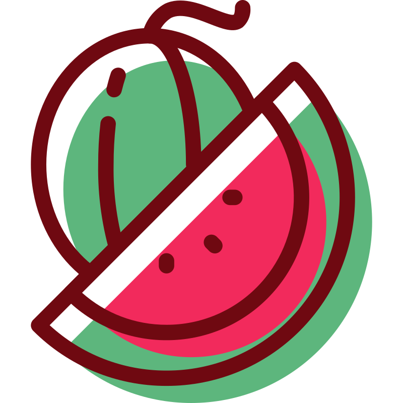
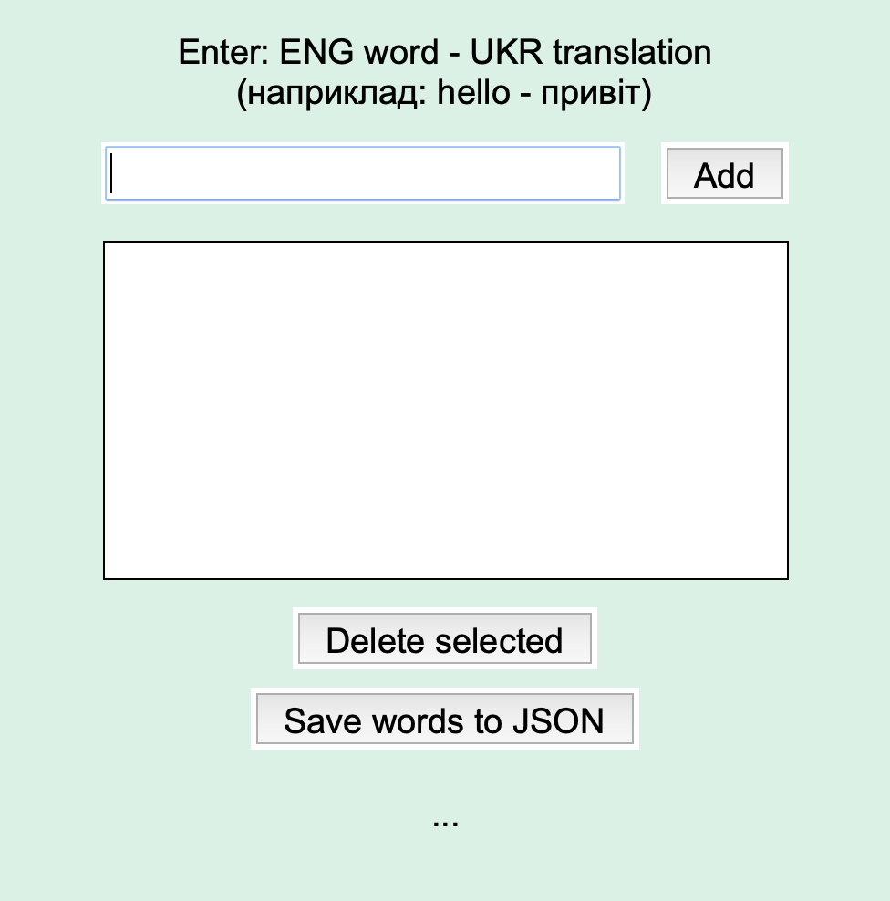
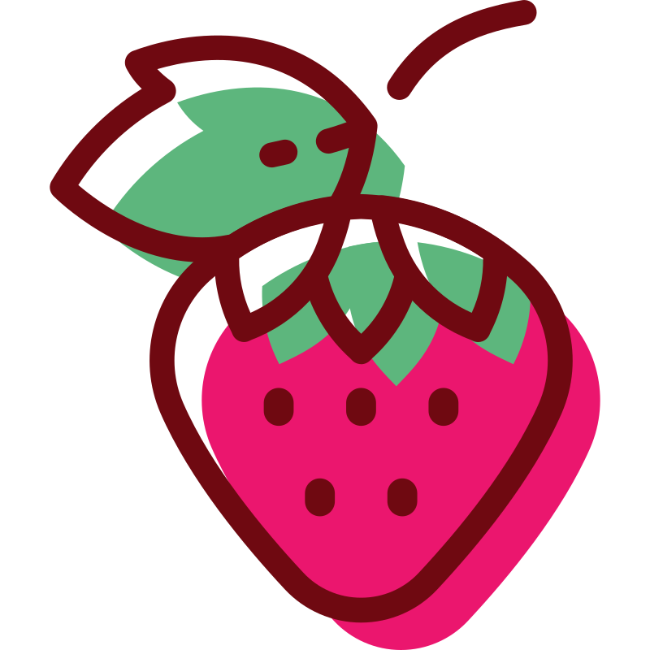
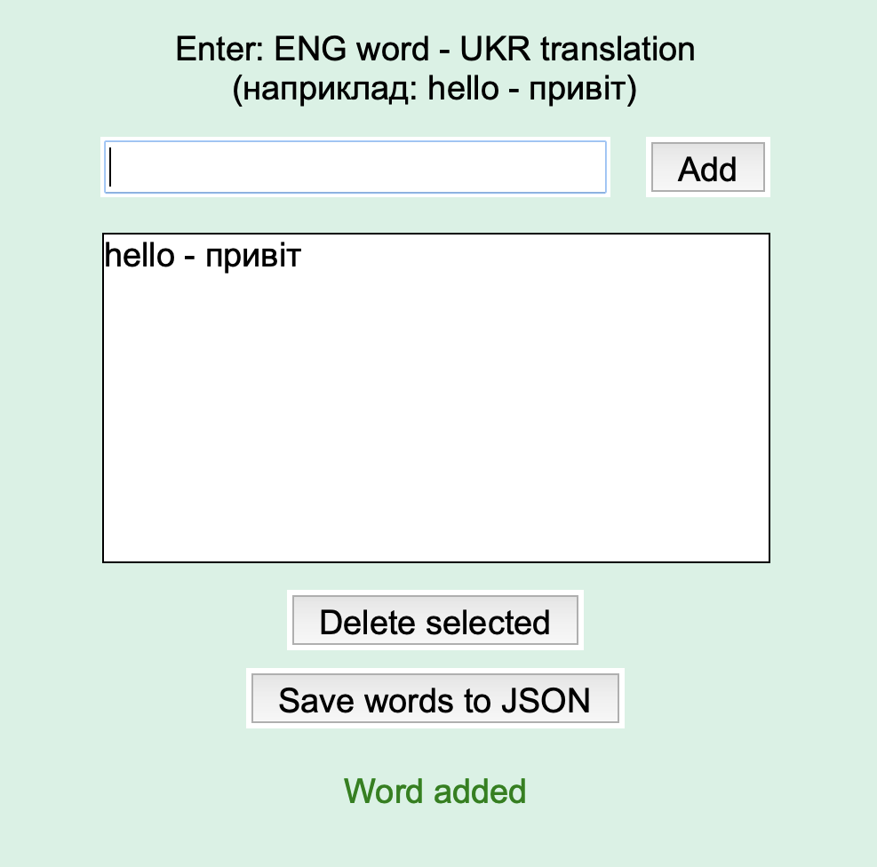
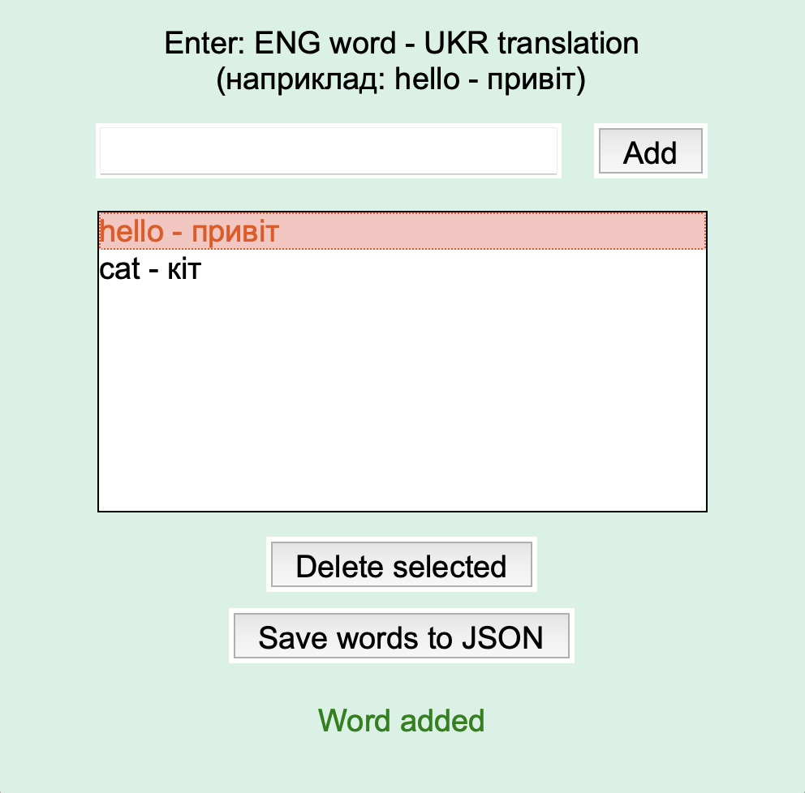
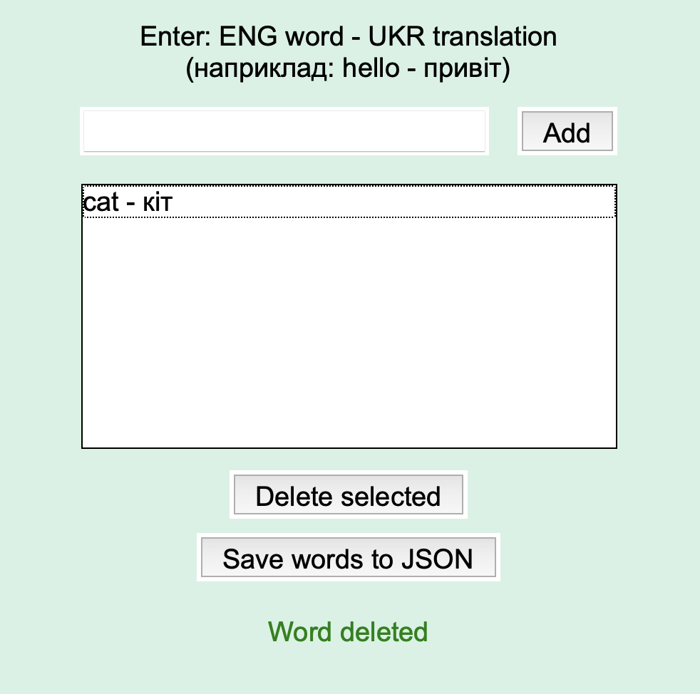
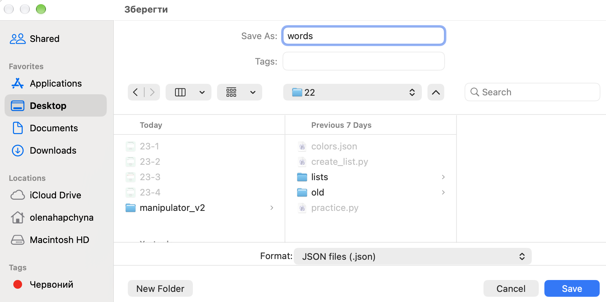
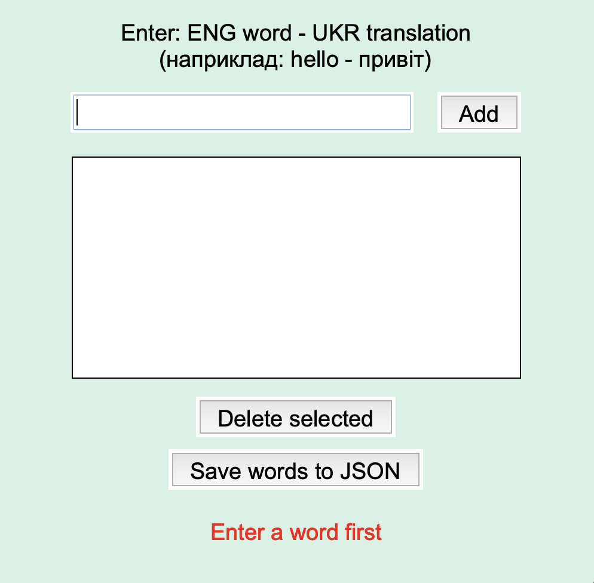
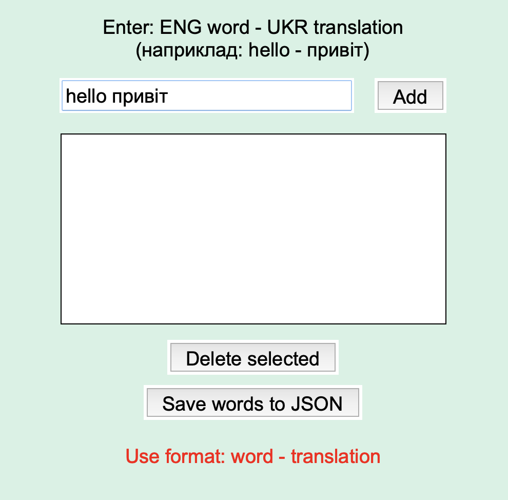

ІнтерфейсЩо робимо сьогодні
У тебе вже є вікно "Словника" з усіма віджетами, але кнопки ще нічого не роблять. Сьогодні додамо логіку: слова будуть додаватися, видалятися та зберігатися у файл.
Кожну функцію робимо за однією схемою: написати → перевірити → покращити. Спочатку пишемо просту версію, яка вже працює, а потім додаємо перевірки та повідомлення, щоб програмою було зручно користуватися.
Фокус на полі вводу
Щоб курсор одразу блимав у полі вводу при відкритті програми і можна було друкувати, не клікаючи по ньому мишкою, використовують метод focus():
entry = Entry(row1, width=25, font=("Arial", 14))
entry.pack(padx=10, side=LEFT)
entry.focus()Завдання 1: Доробляємо інтерфейс
- Над рамкою з полем вводу і кнопкою Add додай Label з інструкцією у два рядки: "Enter: ENG word - UKR translation" і "(наприклад: hello - привіт)". Для переходу на новий рядок використай \n. Віджети з'являються у тому порядку, в якому їх розміщено через pack(), тому цей Label треба створити перед Frame.
- Заміни напис "Words: 0" на порожній Label з назвою messages (text=""). У ньому виводитимуться повідомлення для користувача. Колір тексту задамо пізніше.
- Додай entry.focus() і перевір, що після запуску курсор одразу стоїть у полі вводу.


Додавання словаФункція для повідомлень
Після кожної дії програма має щось сказати користувачу, наприклад, показати зелене повідомлення "Word added" або червоне – про помилку. Але якщо щоразу писати messages.config(text="Word added", fg="green"), але з різним текстом, отримаємо багато повторень майже однакового коду, і це не дуже добре. Краще створити одну функцію для всіх повідомлень:
def display_message(msg, color="black"):
messages.config(text=msg, fg=color)- msg — текст повідомлення;
- clr — колір тексту. Запис color="black" означає значення за замовчуванням: якщо колір не передати, текст буде чорним.
display_message("Word added", "green") # зелений текст
display_message("Enter a word first", "red") # червоний текст
display_message("Hello") # чорний (за замовчуванням)Завдання 2: Функція display_message
- Напиши функцію display_message одразу після Label messages.
- Перевір: тимчасово додай перед window.mainloop() рядок display_message("Test", "green"), запусти програму і переконайся, що з'явився зелений напис. Потім видали цей тестовий рядок.
Додавання слова
Тепер напишемо функцію add_word() для кнопки Add. Спочатку проста версія без перевірок.
Завдання 3: Додавання слова
Функція add_word() має:
- взяти текст із entry і прибрати зайві пробіли (strip());
- додати слово в кінець Listbox;
- очистити поле вводу;
- вивести зеленим повідомлення "Word added".
Перевір: додай кілька слів, наприклад "hello - привіт" і "cat - кіт". Слова з'являються у списку, поле очищується, видно зелене повідомлення. (Поки що можна додати й порожній рядок, і слово без перекладу — це виправимо в додатковому завданні.)

Клавіша Enter замість кнопки
Зручніше додавати слово, просто натиснувши Enter. Для цього є метод bind():
entry.bind("<Return>", lambda event: my_function())- bind(подія, функція) — "коли станеться подія, виклич функцію";
- "<Return>" — подія "натиснули Enter";
- Tkinter передає у функцію аргумент event (інформацію про подію), а функція my_function() нічого не приймає. Тому використовуємо lambda — коротку функцію без назви: lambda event: my_function() означає "прийми event і виклич my_function()".
Такий рядок можна розмістити відразу після створення віджета Entry, навіть якщо функцію створено нижче: код усередині lambda виконається лише тоді, коли користувач натисне Enter.
Завдання 4: Додавання клавішею Enter
Додай bind() для поля вводу.
Перевір: слово додається по Enter.
 Видалення слова
Видалення слова
Методи Listbox
| Команда | Що робить |
|---|---|
| .insert(END, "text") | додає рядок у кінець списку |
| .delete(index) | видаляє один рядок за індексом |
| .delete(0, END) | видаляє всі рядки (очищає список) |
| .size() | повертає кількість рядків |
| .get(0, END) | повертає кортеж з усіма рядками |
Видалення вибраного рядка:
selected = words.curselection() # наприклад, (2,)
index = selected[0] # 2
words.delete(index)Нагадування: якщо нічого не вибрано, curselection() поверне порожній кортеж (), і selected[0] дасть помилку. Тому спочатку перевіряємо len(selected).
Завдання 5: Видалення слова
Напиши функцію delete_word() для кнопки Delete selected. Вона має:
- отримати індекси вибраних рядків;
- якщо щось вибрано — видалити перший вибраний рядок і вивести зеленим "Word deleted".
Перевір: додай кілька слів, виділи одне і видали його.


 Збереження у файл
Збереження у файл
Збереження у файл
Слова, які зникають після закриття програми, не дуже корисні. Щоб їх зберігати, потрібно дві речі: місце і назва для файлу (їх обирає користувач) і запис даних у файл.
Вікно для вибору місця й назви файлу вміє показувати модуль filedialog. Його потрібно імпортувати окремо, бо рядок from tkinter import * його не підключає:
from tkinter import *
from tkinter import filedialogФункція asksaveasfilename() відкриває вікно "Зберегти як..." і повертає шлях до файлу, який обрав користувач:
filepath = filedialog.asksaveasfilename(
defaultextension=".json",
filetypes=[("JSON files", "*.json"), ("All files", "*.*")],
)
print(filepath) # наприклад, C:/Users/Anna/Documents/words.json- defaultextension: додає закінчення .json до назви файлу, якщо користувач сам його не написав.
- filetypes: список типів файлів у вікні. Кожен тип — це пара (опис, шаблон).

Якщо користувач закрив вікно або натиснув Cancel, функція поверне порожній рядок "". Тому перед записом даних у файл треба перевірити, що шлях до файлу не порожній.
Як зберегти дані у JSON-файл:
import json
if filepath:
with open(filepath, "w", encoding="utf-8") as file:
json.dump(content, file, ensure_ascii=False, indent=2)Тут "w" означає запис у файл, encoding="utf-8" та ensure_ascii=False потрібні, щоб українські літери збереглися читабельно, а indent=2 робить красиві відступи у файлі. Блок with сам закриє файл після запису.
Завдання 6: Збереження слів
Напиши функцію save_words() для кнопки Save words to JSON. Вона має:
- отримати всі слова з Listbox (.get(0, END));
- відкрити вікно збереження (asksaveasfilename) з розширенням .json;
- якщо шлях до файлу обрано — записати слова у файл за допомогою json.dump() і вивести зеленим "Saved 3 words" (кількість має бути справжньою: використай f-рядок і len()).
Перевір: додай кілька слів, збережи їх і відкрий створений файл у VS Code. Українські літери мають бути читабельними.
 Додаткові завдання
Додаткові завдання
Додаткові завдання
Ці завдання додаткові: програма вже працює і без них, але з ними нею зручніше користуватися.
Перевірка введення
Користувач може ввести що завгодно: нічого, слово без перекладу чи те саме слово двічі. Перевіряємо кожен випадок за допомогою if / elif / else. Спрацює лише перша умова, яка виконується, або else, якщо жодна не підійшла.
if ...: # умова 1
display_message("...", "red")
elif ...: # умова 2
display_message("...", "red")
else:
# усе гаразд, додаємо словоЩо знадобиться для умов:
- not word — рядок порожній (або word == "");
- " - " not in word — у слові немає розділювача " - " (пробіл, дефіс, пробіл);
- word in words.get(0, END) — таке слово вже є у списку. .get(0, END) повертає кортеж зі всіма рядками Listbox.
Додаткове завдання 1: Перевірка введення при додаванні
Додай у add_word() три перевірки. Усі повідомлення червоні:
- слово порожнє — "Enter a word first";
- немає розділювача " - " — "Use format: word - translation";
- слово вже є у списку — "This word is already in the list".
Якщо всі перевірки пройдено — додаємо слово, як у попередньому завданні.
Перевір: по черзі спробуй кожну помилку і одне правильне слово.


Додаткове завдання 2: Повідомлення при видаленні
При натисканні кнопки для видалення слова, якщо нічого не вибрано, має вивестися червоне повідомлення "Select a word to delete".
Перевір: натисни кнопку при порожньому списку та коли слова є, але жодне не вибране.
Збереження: перевірки
Як зупинити функцію, якщо немає що зберігати:
def save():
# ...
if not content:
# тут можна змінити текст у Label
return
# далі пишемо код без else
Додаткове завдання 3: Перевірки при збереженні
- Якщо список слів порожній, виведи червоним "The list is empty" і зупини функцію (return) ще до відкриття вікна збереження.
- Якщо користувач закрив вікно або натиснув Cancel, виведи сірим "Save canceled".
Перевір: збереження порожнього списку, збереження зі скасуванням і звичайне збереження.